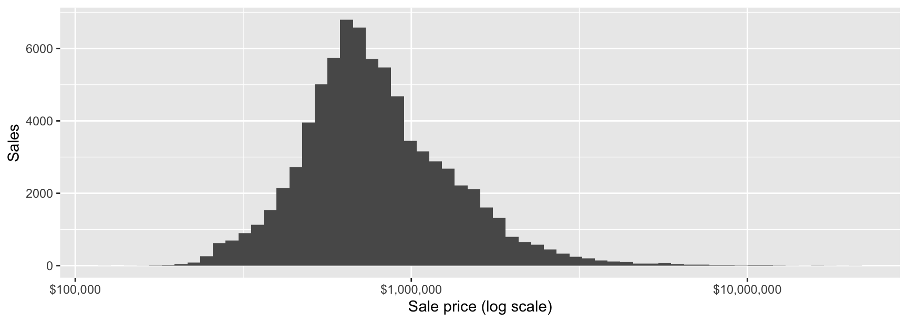

install.packages(c("fixest", "modelsummary")) # once, in the ConsoleCOMM 407 · fixest and modelsummary
31 October 2026
“Holding the others fixed” is what a regression adds to a scatter plot.
library(tidyverse)
bca <- read_rds("data/bca262.rds")
condo <- bca |>
filter(juris_label == "City of Vancouver", act_use_cat == "Strata Res") |>
mutate(sale_year = year(sale_date),
age = sale_year - year_built,
type = if_else(act_use_name == "Row Housing (Single Unit Ownership)",
"Townhouse", "Condo")) |>
filter(between(sale_year, 2016, 2025))
nrow(condo)[1] 77504
A few sales near $21 million stretch the axis. What are they, and are all sales market sales?
# A tibble: 4 × 4
sale_date price floorarea neigh_label
<date> <dbl> <dbl> <chr>
1 2023-02-13 21016392 3970 Downtown South
2 2024-01-10 20168900 4338 West End
3 2022-10-06 19353051 2917 Oakridge
4 2023-04-04 18380952 6549 Harbour The top sales are penthouses and large units: unusual, but plausible market sales.
# A tibble: 3 × 3
sale_date price n
<date> <dbl> <int>
1 2025-03-18 654656 16
2 2023-10-12 961845 14
3 2023-10-12 1208472 1316 units sold on one day at an identical $654,656: one building sold as a block, with the price split evenly. Decide how to handle rows like these before you model, and say what you did.
| Model | A coefficient of b means |
|---|---|
log(price) ~ x |
One more unit of x is linked to about 100 × b % higher price. |
log(price) ~ log(x) |
1% more x is linked to about b % higher price. |
The second form is an elasticity. We use it for floor area.
NOTE: 97 observations removed because of NA values (RHS: 97).OLS estimation, Dep. Var.: log(price)
Observations: 77,407
Standard-errors: IID
Estimate Std. Error t value Pr(>|t|)
(Intercept) 5.94475 0.018848 315.402 < 2.2e-16 ***
log(floorarea) 1.14019 0.002812 405.505 < 2.2e-16 ***
---
Signif. codes: 0 '***' 0.001 '**' 0.01 '*' 0.05 '.' 0.1 ' ' 1
RMSE: 0.290685 Adj. R2: 0.679928Read the note at the top of the output.
The model dropped 97 sales, the ones with no floor area, including the 16 bulk-sale units. Ask whether the missing rows differ from the rest.
m2 <- feols(log(price) ~ log(floorarea) + bedrooms + total_bath + age + type,
data = condo)
coeftable(m2) |> round(4) Estimate Std. Error t value Pr(>|t|)
(Intercept) 5.3497 0.0325 164.3533 0
log(floorarea) 1.2481 0.0055 227.8176 0
bedrooms -0.0621 0.0025 -24.8509 0
total_bath 0.0122 0.0026 4.7496 0
age -0.0026 0.0001 -38.2319 0
typeTownhouse -0.0526 0.0038 -13.9265 0
attr(,"vcov_type")
[1] "IID"type has two levels. R uses the first, “Condo”, as the reference.typeTownhouse compares townhouses with condos of the same size, bedrooms, bathrooms, and age.condo_th <- condo |> mutate(type = fct_relevel(type, "Townhouse"))
feols(log(price) ~ log(floorarea) + bedrooms + total_bath + age + type,
data = condo_th) |> coef() |> round(4) (Intercept) log(floorarea) bedrooms total_bath age
5.2970 1.2481 -0.0621 0.0122 -0.0026
typeCondo
0.0526 The sign flips: now the coefficient compares condos with townhouses.
m3 <- feols(log(price) ~ log(floorarea) + bedrooms + total_bath + age + type |
neigh_label + sale_year, data = condo)
coeftable(m3) |> round(4) Estimate Std. Error t value Pr(>|t|)
log(floorarea) 1.0618 0.0043 247.9795 0.0000
bedrooms -0.0018 0.0019 -0.9390 0.3477
total_bath 0.0215 0.0019 11.3774 0.0000
age -0.0056 0.0001 -96.6676 0.0000
typeTownhouse -0.0036 0.0029 -1.2476 0.2122
attr(,"vcov_type")
[1] "IID"| neigh_label + sale_year compares sales in the same neighbourhood and the same year. It is the same as adding a dummy for every neighbourhood and every year.
gof_map picks the summary rows; coef_omit hides the intercept.| Size only | Characteristics | Fixed effects | |
|---|---|---|---|
| + p < 0.1, * p < 0.05, ** p < 0.01, *** p < 0.001 | |||
| log(floorarea) | 1.140*** | 1.248*** | 1.062*** |
| (0.003) | (0.005) | (0.004) | |
| bedrooms | -0.062*** | -0.002 | |
| (0.002) | (0.002) | ||
| total_bath | 0.012*** | 0.021*** | |
| (0.003) | (0.002) | ||
| age | -0.003*** | -0.006*** | |
| (0.000) | (0.000) | ||
| typeTownhouse | -0.053*** | -0.004 | |
| (0.004) | (0.003) | ||
| Num.Obs. | 77407 | 76670 | 76669 |
| R2 | 0.680 | 0.689 | 0.833 |
A coefficient depends on what else is in the model.
fixest reports IID standard errors by default. Estimate Std. Error t value Pr(>|t|)
log(floorarea) 1.0618 0.0408 26.0553 0.0000
bedrooms -0.0018 0.0098 -0.1814 0.8573
total_bath 0.0215 0.0138 1.5539 0.1314
age -0.0056 0.0010 -5.3553 0.0000
typeTownhouse -0.0036 0.0213 -0.1695 0.8666
attr(,"vcov_type")
[1] "Clustered (neigh_label)"This is why the group project avoids simple “distance to X vs. price” correlations.
For single-family sales (act_use_cat == "S/F Res") in the City of Vancouver, 2016–2025:
log(price) on log(floorarea), log(lotsize), and age, with neighbourhood and sale-year fixed effects.sfd <- bca |>
filter(juris_label == "City of Vancouver", act_use_cat == "S/F Res") |>
mutate(sale_year = year(sale_date), age = sale_year - year_built) |>
filter(between(sale_year, 2016, 2025))
m_sfd <- feols(log(price) ~ log(floorarea) + log(lotsize) + age |
neigh_label + sale_year, data = sfd, vcov = ~neigh_label) Estimate Std. Error t value Pr(>|t|)
log(floorarea) 0.4711 0.0292 16.1296 0e+00
log(lotsize) 0.3307 0.0368 8.9926 0e+00
age -0.0009 0.0002 -4.0415 4e-04
attr(,"vcov_type")
[1] "Clustered (neigh_label)"[1] 880The model drops 880 of 25,215 sales: 248 have no lot size and 738 no floor area. For a house, land carries much of the value, so the floor-area elasticity is much lower than for condos.
COMM 407